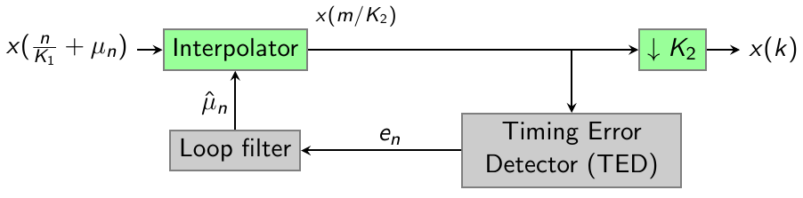
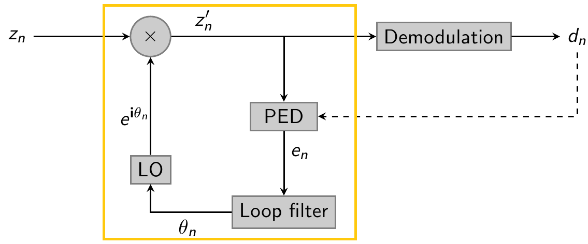

Recouvrement d'horloge et de porteuse
Le recouvrement d'horloge consiste à essayer d'échantillonner le signal reçu au bon instant, c'est-à-dire de manière synchronisée avec l'horloge de l'émetteur. Si cette opération n'est pas effectuée, le risque est que le décalage temporel induise des erreurs en réception, comme dans l'exemple ci-dessous : 
L'architecture utilisée est basée sur (voir figure ci-dessous) : un interpolateur, qui sert à corriger le décalage entre l'horloge d'émission et l'horloge de réception, un détecteur d'erreur d'horloge (ted) et un filtre de boucle qui servent à bien aligner l'interpolateur sur l'horloge d'émission, et enfin un dernier étage optionnel de décimation pour passer à la fréquence symbole.  Un exemple complet peut être trouvé dans la documentation de la fonction clock_rec_process.
Le recouvrement de porteuse consiste à pouvoir récupérer la phase et la fréquence de la porteuse reçue, de manière à pouvoir par la suite pouvoir effectuer une démodulation cohérente. Les fonctions fournies permettent de :
- Initialiser (carrier_rec_init) et utiliser (carrier_rec_process) un objet de recouvrement de porteuse,
- Sélectionner (ped_init) un détecteur d'erreur de phase (PED, pour Phase Error Detector) spécifique, qui peut être une power loop (squaring loop en BPSK), une boucle de Costa, MAP, ou "tan loop", etc.
- Sélectionner un filtre de boucle (lf_init), du premier (pour le suivi de la phase de la porteuse) ou second (pour le suivi de la phase et de la fréquence de la porteuse) ordre.
L'architecture utilisée est la suivante (rectangle jaune) : 
Un exemple complet peut être trouvé dans la documentation de la fonction carrier_rec_process.
Types
using tsd::telecom::Ped = typedef fonction<float (cfloat x)>
Interface pour un détecteur de phase.
Enumérations
TedType : GARDNER | MM | EARLY_LATE;
Les différents types de détecteur d'erreur d'horloge.
PedType : AUTO | COSTA | POWER_LOOP | TAN_LOOP | DEC_LOOP;
Les différents types de détecteurs d'erreur de phase.
Structures
struct Ted
struct ClockRecConfig
Clock recovery configuration structure.
struct FiltreBoucle
Interface abstraite pour un filtre de boucle.
struct PLLConfig
Structure de configuration pour une PLL.
struct RPLLConfig
Structure de configuration pour une PLL à sortie réelle.
Fonctions
sptr<FiltreGen<cfloat>> clock_rec_init(const ClockRecConfig &config)
Creation of a clock recovery object.
sptr<FiltreGen<cfloat>> clock_rec2_init(const ClockRecConfig &config)
sptr<Ted> ted_init(TedType type)
Création d'un détecteur d'erreur d'horloge (ted / timing error detector)
Ped ped_init(PedType type, sptr<FormeOnde> wf)
Création d'un détecteur d'erreur de phase (ped / phase error detector)
Ped ped_costa(entier M)
Ped ped_ploop(entier M)
Ped ped_tloop(entier M)
Ped ped_decision(sptr<FormeOnde> wf)
sptr<FiltreBoucle> filtre_boucle_ordre_1(float τ)
Filtre de boucle du premier ordre
sptr<FiltreBoucle> filtre_boucle_ordre_2(float BL, float η)
Filtre de boucle du seconde ordre
sptr<Filtre<float, float, RPLLConfig>> rpll_création(const RPLLConfig &config)
Création d'une PLL (boucle à vérouillage de phase) à sortie réelle.
sptr<Filtre<cfloat, cfloat, PLLConfig>> cpll_création(const PLLConfig &config)
Création d'une PLL (boucle à vérouillage de phase) à sortie complexe.